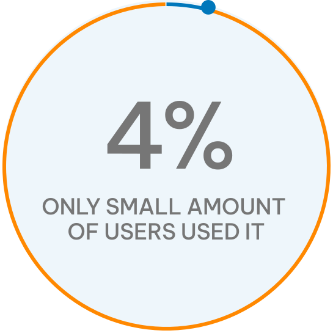
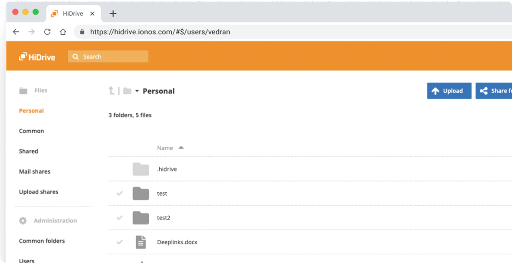
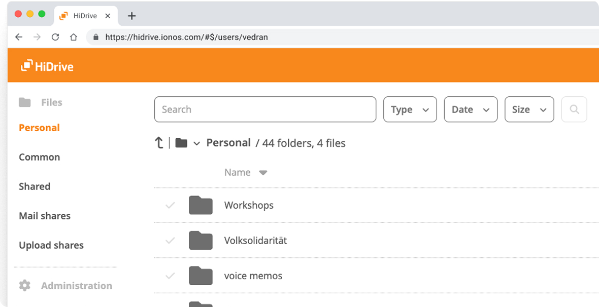
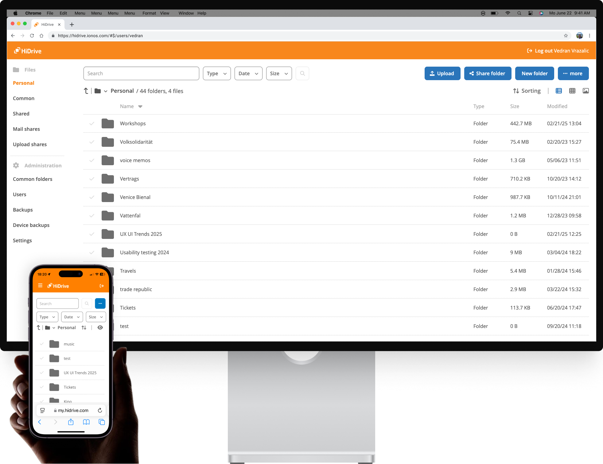
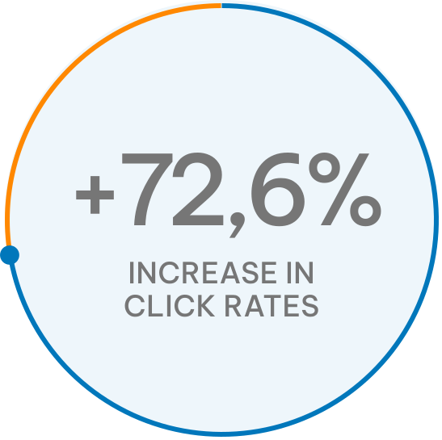
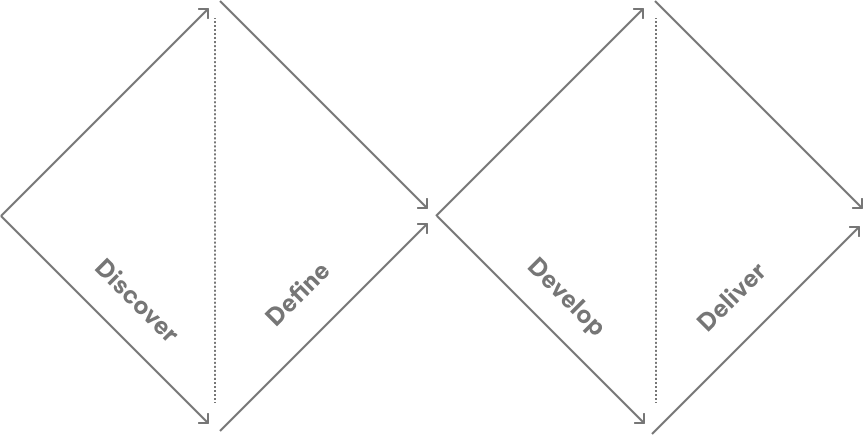

CASE STUDY
Improving the
search function
search function
Year:
2022/23
Duration:
4 months
4 months
My Role:
UX/UI Design
& Research
UX/UI Design
& Research
UX Research methods:
- Competetive analysis
- User Interviews
- Usability Testing
- Competetive analysis
- User Interviews
- Usability Testing
HiDrive is a cloud storage service, similar to Dropbox or Google Drive, and is based in Germany. As part of Strato, it serves both business and personal customers across six countries.
As a UX/UI designer for HiDrive, my role was to enhance the product's usability and aesthetics, ensuring alignment between business objectives and user needs.
As a UX/UI designer for HiDrive, my role was to enhance the product's usability and aesthetics, ensuring alignment between business objectives and user needs.
Problem
Users were not engaging with HiDrive's search functionality.

How to integrate advanced search filters into HiDrive without overwhelming users or violating technical constraints?
Solution
We redesigned the search interface with always-visible dropdown filters and a cleaner results layout, making search intuitive on desktop and mobile.
Before
Keywords search only

Keywords search only
After
Advanced filter search

Advanced filter search
Below, you can see an advanced filter search with breaking points for desktop and mobile.

Impact
Knowing that most HiDrive users browse on desktop, I optimized for larger breakpoints. The result: a +72.6% jump in search-bar click-throughs.

Curious how this result came to life?
Let’s walk through the process — it takes 8 minutes to read.
Let’s walk through the process — it takes 8 minutes to read.
Process
During several months I used a Double Diamond innovation and design process, including User - Centered design and Design Thinking.
Double Diamond

Use the interactive menu below to jump between steps,
and click Process in the left sidebar to come back.